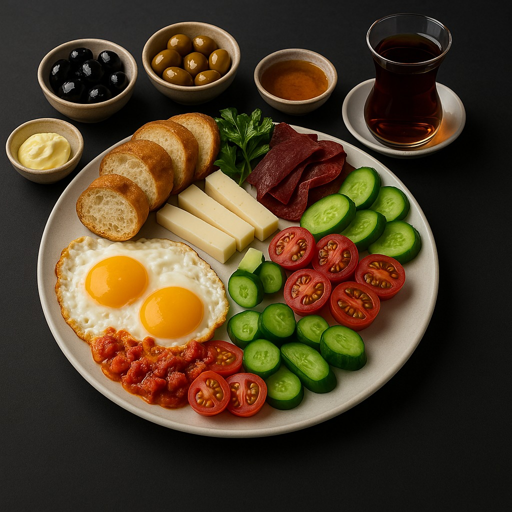
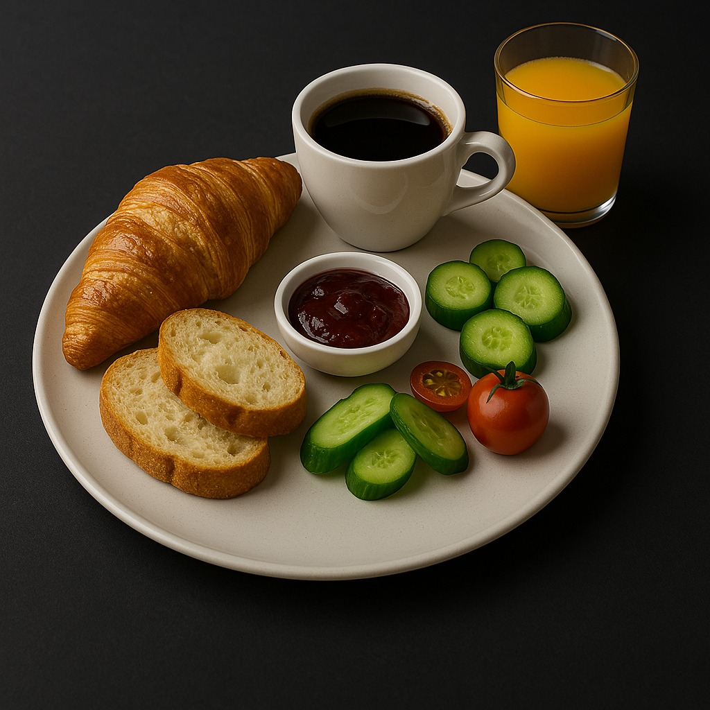
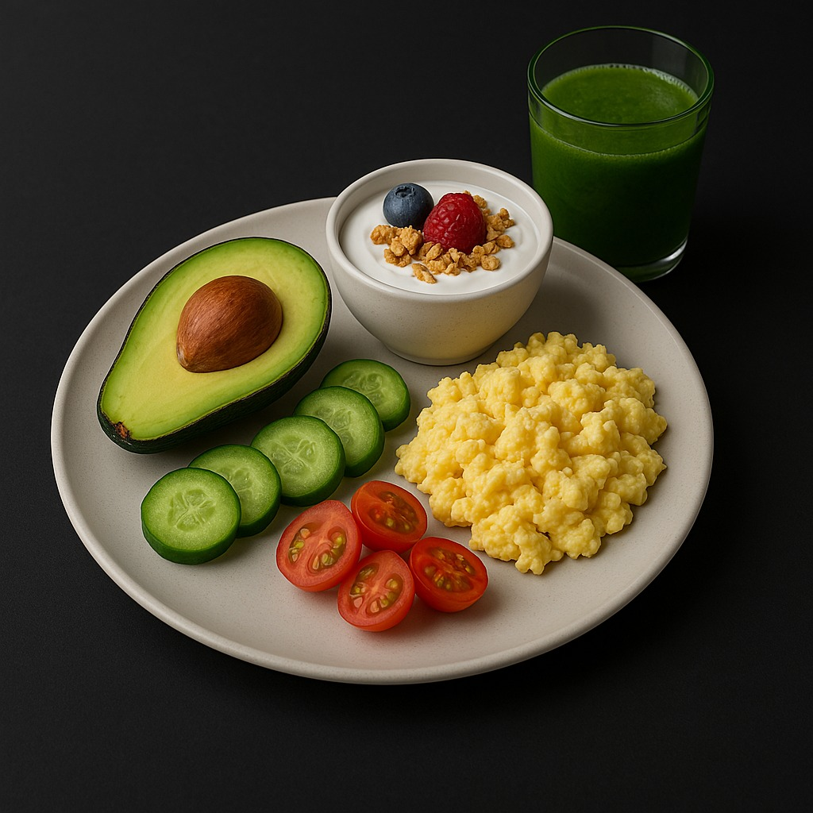

Serpme Kahvaltı

- Beyaz peynir, kaşar, tulum peyniri
- Domates, salatalık, yeşillikler
- Zeytin çeşitleri
- Ev yapımı reçeller & bal
- Haşlanmış yumurta
- Sınırsız demleme çay
Fransız Kahvaltısı

- Kruvasan ve tereyağı
- Fransız usulü omlet
- Taze meyve tabağı
- Cam şişede portakal suyu
- Filtre kahve veya espresso
Fit Kahvaltı

- Yulaf ezmesi ve badem sütü
- Chia tohumlu yoğurt
- Taze meyve dilimleri
- Haşlanmış yumurta
- Zeytinyağlı avokado dilimleri
Vegan Alternatifler

- Vegan peynir çeşitleri
- Zeytin ve humus
- Sebzeli tofu
- Tam buğday ekmeği
- Bitkisel süt ile kahve
|